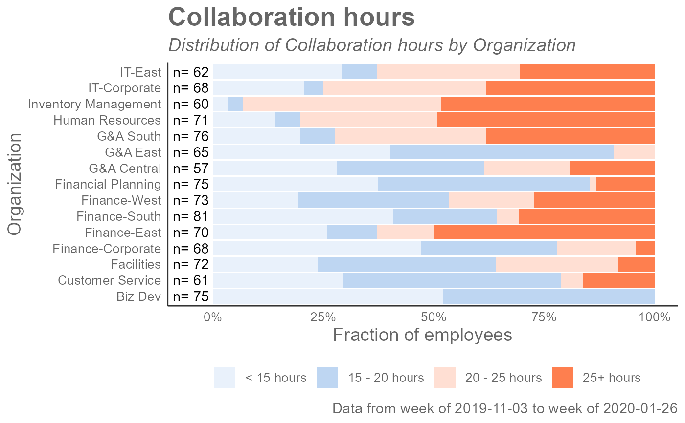

R/collaboration_dist.R, R/create_dist.R
collaboration_dist.RdAnalyze the distribution of Collaboration Hours. Returns a stacked bar plot by default. Additional options available to return a table with distribution elements.
collaboration_dist( data, hrvar = "Organization", mingroup = 5, return = "plot", cut = c(15, 20, 25) ) collaboration_distribution( data, hrvar = "Organization", mingroup = 5, return = "plot", cut = c(15, 20, 25) ) collaboration_distribution( data, hrvar = "Organization", mingroup = 5, return = "plot", cut = c(15, 20, 25) )
| data | A Standard Person Query dataset in the form of a data frame. |
|---|---|
| hrvar | HR Variable by which to split metrics. Accepts a character vector, defaults to "Organization" but accepts any character vector, e.g. "LevelDesignation" |
| mingroup | Numeric value setting the privacy threshold / minimum group size, defaults to 5. |
| return | Character vector specifying what to return, defaults to "plot". Valid inputs are "plot" and "table". |
| cut | A numeric vector of length three to specify the breaks for the distribution, e.g. c(10, 15, 20) |
Uses the metric Collaboration_hours.
Other Collaboration:
collaboration_area(),
collaboration_fizz(),
collaboration_line(),
collaboration_rank(),
collaboration_sum(),
collaboration_trend(),
meeting_trend()
## Return a plot collaboration_dist(sq_data, hrvar = "Organization")## Return a table collaboration_dist(sq_data, hrvar = "Organization", return = "table")#> # A tibble: 15 x 6 #> group `< 15 hours` `15 - 20 hours` `20 - 25 hours` `25+ hours` Employee_Count #> <chr> <dbl> <dbl> <dbl> <dbl> <int> #> 1 Biz ~ 0.52 0.48 NA NA 75 #> 2 Cust~ 0.295 0.492 0.0492 0.164 61 #> 3 Faci~ 0.236 0.403 0.278 0.0833 72 #> 4 Fina~ 0.471 0.309 0.176 0.0441 68 #> 5 Fina~ 0.257 0.114 0.129 0.5 70 #> 6 Fina~ 0.407 0.235 0.0494 0.309 81 #> 7 Fina~ 0.192 0.342 0.192 0.274 73 #> 8 Fina~ 0.373 0.48 0.0133 0.133 75 #> 9 G&A ~ 0.281 0.333 0.193 0.193 57 #> 10 G&A ~ 0.4 0.508 0.0923 NA 65 #> 11 G&A ~ 0.197 0.0789 0.342 0.382 76 #> 12 Huma~ 0.141 0.0563 0.310 0.493 71 #> 13 Inve~ 0.0333 0.0333 0.45 0.483 60 #> 14 IT-C~ 0.206 0.0441 0.368 0.382 68 #> 15 IT-E~ 0.290 0.0806 0.323 0.306 62